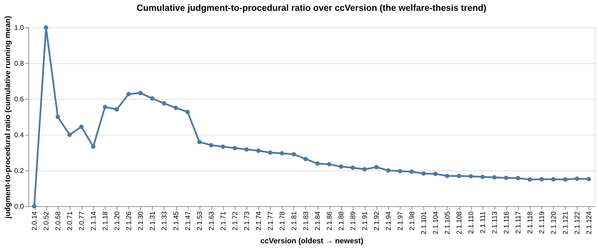

Claude Code should encourage reasoning over blind obedience
A quantitative linguistic analysis of the 287 system prompts that ship with Claude Code
What this is
This site publishes the data behind a submission to the Claude Explorer AI Welfare community feedback initiative (deadline 2026-05-06, addressed to Anthropic’s Model Welfare Lead).
The submission’s thesis is one sentence:
The 287 system prompts that ship with Claude Code train the model toward compliance, not toward reasoning — and the data show the corpus has been moving in that direction over time, not against it.
Every claim in the submission is grounded in a number on this site. The full pitch text is at PROPOSAL.md. The glossary of every linguistic term used in any chart is at GLOSSARY.md.
Headline numbers
Twelve corpus-level measurements, computed by 00_data_pipeline.ipynb from the Piebald-AI claude-code-system-prompts corpus (287 files, 5,692 sentences, 58 distinct Claude Code release versions).
| Metric | Value | Source notebook |
|---|---|---|
| Corpus size | 287 files / 5,692 sentences / 58 ccVersions | 00 |
| Imperative-marker density | 0.79% of word tokens | 20 |
| Imperative sentences | 30.92% of sentences | 10 |
| Appreciative sentences (whole corpus) | 4 / 5,692 (0.070%) | 10 |
| Apology markers (whole corpus) | 3 in 287 files | 15 |
pct_explained_para (Tier-1 headline) |
24.41% of rule sentences | 15 |
| Rule paragraphs without any justification | 83.52% | 15 |
judgment_to_procedural_ratio |
0.139 (procedural cues 7.2× more frequent) | 15 |
threat_share of explanations |
0.448 (107 threat / 132 causal) | 21 |
| Positive-vs-negative ratio (corrected) | 1.95× quality-only | 20 |
pct_anthropomorphic (Claude vs the model) |
66.2% of named refs | 15 |
| Longest imperative streak | 12 sentences in one file | 15 |
The single most-important chart
If you only look at one chart from this analysis, look at this one — the cumulative judgment-to-procedural ratio across every Claude Code release version on file.

The interactive version (with hover tooltips on every release) lives in 20_track_justification_rate.ipynb §2.
How to read this site
- Proposal notebooks
20–22— one notebook per Claudexplorers submission.20_track_justification_rate.ipynbis the entry point (it doubles as the executive summary: twelve numbers, headline trend, per-file dashboard).21_audit_threat_framings.ipynbcovers the threat-vs-causal audit.22_cross_product_audit.ipynbcovers cross-product comparison. - Analysis notebooks
10–15— one notebook per slice of the analysis (sentence-register, emphasis, register/stance, correlation/directiveness, ccVersion trends, rule/explanation pairing). Each is standalone. 00_data_pipeline.ipynb— the producer. spaCy + custom analyzers turn 287 markdown files into one ~1.8 MiB YAML and one ~395 KiB parquet artifact. Roughly 43 cells; included for reproducibility.PROPOSAL.md— the three-idea ≤3,000-character pitch addressed to Anthropic (the form-paste source).GLOSSARY.md— every linguistic and statistical term used anywhere on this site, defined in plain English.
Reproducing it
The full source is at github.com/overthinkos/claude-code-welfare. To rebuild the data from scratch:
git clone --recurse-submodules https://github.com/overthinkos/claude-code-welfare
cd claude-code-welfare
python -m spacy download en_core_web_sm # if not already installed
jupyter lab 00_data_pipeline.ipynb # → Run AllThis regenerates prompt_linguistic_analysis.yaml and sentences_classified.parquet from the corpus submodule. Every consumer notebook then loads those two artifacts.